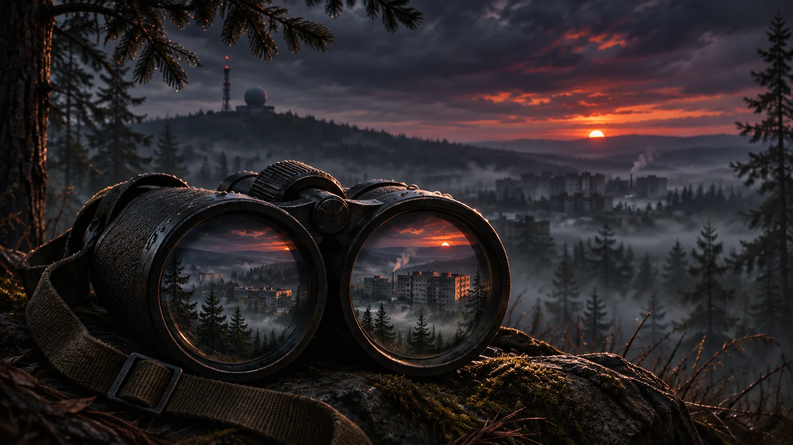

Доп. оптика (лупа)
Увеличение области в центре экрана для более удобного наблюдения за целью.
Использует функцию экранного увеличения Windows и показывает увеличенную область в круге по центру экрана. Помогает рассмотреть удалённую цель и мелкие детали, не меняя игровую оптику.